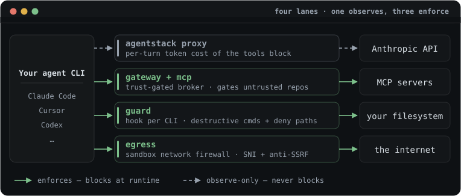

AgentStack — Enforcement matrix
This is the authoritative, code-grounded answer to one question: for each execution mode, what does AgentStack actually enforce, and by what mechanism? When any other document and this one disagree, this one is right — it is checked against the source, not against intent.
Audience: anyone deciding what a mode actually guarantees.
Contents
- Claim discipline
- What "trusted" does and does not mean
- Policy is authority, not isolation
- The matrix
- Per-cell notes
- Experimental
tools_execute - See also
AgentStack intercepts an agent CLI on four independent lanes — one observes, three enforce:

Claim discipline#
AgentStack restricts destinations and records decisions; it cannot guarantee that sensitive content never leaves through an allowed destination. An enforced egress allowlist blocks connections to hosts you did not approve — it does not inspect payloads, and it permits traffic to every host you did approve, including the model API itself. A prompt-injected agent can still exfiltrate through any allowed channel. The honest claim is: untrusted project declarations are not auto-activated, and unapproved egress is blocked on the enforced paths — never "exfiltration is impossible."
Read every cell below with that ceiling in mind. "Enforced" means the disallowed action is prevented at runtime (by the kernel, the container boundary, or the proxy); it never means the allowed action is safe.
What "trusted" does and does not mean#
Trusting a project asserts exactly one thing: the current manifest, local overlay, and lockfile consent digest was approved for automatic loading on this machine. The lockfile separately pins resolved server definitions, skills, and instructions; drift in those inputs fails verification. Detached signatures attest to lockfile bytes but do not silently create local trust.
Trusted does not mean:
- Safe to run unsandboxed. Trust gates whether a bundle's servers spawn, its skills enter context, and its secrets resolve. It does not confine what a running agent then does — that is the job of policy and the sandbox, per the matrix below.
- Vetted for correctness or intent.
agentstack trustsummarizes the runtime surface—commands, HTTP contacts, secret refs, and skill pin status—so you can judge it. AgentStack verifies the consent digest and lock pins; it does not vouch for what the referenced code does. - Tamper-proof against a compromised host agent. In host mode the agent CLI runs as you, so it can in principle reach the user-writable trust store under
~/.agentstack/and self-trust a bundle. Only the sandbox removes this. (A recorder-backed tamper log for trust-store mutations is intended but not yet wired — see the audit/recording row.)
Conversely, untrusted project declarations are inert on automatic and experimental execution paths: the auto-project gateway does not spawn or contact their MCP servers or resolve their secrets, and tools_execute refuses to begin. This does not sandbox arbitrary repository code, prevent a user from running it manually, or block an explicit static agentstack apply; those are separate authorization and execution paths.
Policy is authority, not isolation#
Policy decides which tools, hosts, secrets, and paths are permitted; it does not decide where the process runs. Policy is not a sandbox — an allowed tool can still have side effects, and an allowed host can still receive sensitive data. Confinement is the job of --sandbox and --lockdown, per the matrix below; the two compose but are never substitutes.
The shipped presets (examples/policies/) map to intent, not to a single universal mode: use developer for daily work, compatible as a migration step from an unmanaged setup, locked-down when a run needs confinement, and ci as a runner-only floor. In every case the effective ruleset is the machine ∩ project intersection, so a preset can only narrow what the machine ceiling already allows.
The matrix#
Modes are columns; policy dimensions are rows. Legend:
- enforced — a runtime mechanism prevents the disallowed action; bypass means defeating the kernel, the container, or the proxy.
- coarse — a real check runs, but at coarser granularity than the policy can express (whole-workspace mount vs. per-path; host-only at write time vs. exact host:port at runtime; once-at-construction vs. per-call).
- unsupported — no code path on this mode consults the policy for this dimension; the dimension has no effect here. (Stated bluntly rather than softened to "advisory": for these cells no check happens at all, so there is nothing to bypass.)
- cooperative — a real per-call check runs, but only because the harness chooses to consult it (a pre-tool-use hook). Protects against an agent's accidents; a harness that ignores its own hook protocol, or a process the harness never routes through hooks, bypasses it entirely. Strictly weaker than enforced and never to be described as enforcement.
| Dimension | host | gateway | --sandbox | --lockdown |
|---|---|---|---|---|
| Tools | unsupported | enforced | enforced† | enforced |
| Egress | coarse | coarse | enforced* | enforced |
| Secrets | enforced | enforced | enforced‡ | enforced |
| Filesystem — write | cooperative¶ | cooperative¶ | coarse | coarse |
| Filesystem — read | cooperative¶ | cooperative¶ | coarse | coarse |
| Audit / recording | unsupported | enforced | enforced§ | enforced |
| Native extensions | unsupported‖ | unsupported‖ | unsupported‖ | unsupported‖ |
* for proxied traffic only. Plain --sandbox points HTTPS_PROXY at the proxy but the container keeps an ordinary bridge network — a process that ignores the proxy env can still dial out directly. The run is labelled SANDBOX / PROXIED · DIRECT ROUTE OPEN for exactly this reason; only --lockdown (no direct route, topological confinement) earns ENFORCED. See the egress section below.
† plain sandbox, for MCP traffic routed through the gateway. A trusted run renders one host-gateway entry into the harness config, so calls hit Gateway::try_call. Plain --sandbox still has an open direct route: an agent that independently reaches an egress-allowed upstream can bypass that gateway. An untrusted bundle, a bundle with no proxied servers, or an incompatible adapter can also be unrouted; those cases are surfaced at runtime. Under --lockdown, D4 closes this qualification: the same frozen, pin-verified server set drives gateway dispatch and the gateway_only_hosts egress fence; direct connections to every declared HTTP MCP host are denied even when ordinary egress policy allows them. If the gateway entry and native-config shadows cannot be installed, lockdown refuses to start. Undeclared service aliases are outside this exact declared-endpoint claim.
‡ plain sandbox, for gateway-routed runs. The host-side gateway resolves ${REF} secrets in its own memory and hands the container only the endpoint URL + a per-run bearer token — resolved secret values never enter the container. A prior agentstack apply that baked secrets into a project config is shadowed out. (A run that isn't gateway-routed falls back to the coarse rendered-config path.)
§ plain sandbox, for gateway-routed runs. A gateway-routed run's own events.jsonl gains a ToolCall per call (digest-only args) and a SecretAccess per resolved ref (name only), alongside the lifecycle + egress events it already held. Trust-store mutations and cost/tokens remain unrecorded. See the Audit / recording section.
‖ runtime is unsupported in every mode — this is a pre-delivery capability, not a runtime one. A native extension's code runs inside the harness process at full user permission; no policy ceiling, gateway, egress fence, container, or guard hook observes or constrains it once the harness loads it, so there is no runtime cell to earn a stronger label. What agentstack governs happens entirely before delivery: the source is content-pinned in agentstack.lock, an untrusted or drifted project renders zero bytes, apply copies (never symlinks) the pinned bytes into the harness's extension directory, and run --locked re-verifies each delivered copy against its pin before launch. That pipeline is provenance and content binding — which bytes, from where, reviewed by whom — not runtime enforcement, and it is deliberately labelled as such. See the Native extensions section.
Two of the four columns are execution modes for a rendered config: host is agentstack apply + agentstack run (adapters write native config, the harness runs on the bare machine and talks to upstream MCP servers directly). gateway is the in-process broker (agentstack mcp, connect, code mode) — every MCP call routes through Gateway::try_call. --sandbox and --lockdown are agentstack run --sandbox [--lockdown]: the harness runs in a Docker container behind the egress proxy.
Per-cell notes#
Tools#
- host — unsupported.
render_server()andplan_target_with_servers()write the manifest's servers straight into the harness's native MCP config with the real command/URL; the harness then talks to upstream servers directly.CompiledRuleset::tool_decisionis never called on this path. (crates/adapters/src/render.rs,crates/cli/src/render/apply.rs) - gateway — enforced. Every call checks
tool_decision(server, tool)before dispatch, andnamespaced_tools()filters denied tools out of discovery too, so a denied tool is invisible and refused if called anyway. This is the single enforcement point. (Gateway::try_call,crates/cli/src/gateway.rs) - sandbox — enforced for gateway-routed traffic. A trusted run builds a host-side gateway (
Gateway::from_plan— hard trust gate: untrusted → empty → unrouted) and a token-gated HTTP MCP endpoint, then renders one gateway entry into the harness's user-scope config and shadows any direct project config. The container's MCP calls therefore reachGateway::try_call, where[policy.tools]is enforced exactly as in gateway mode (denied at discovery and at call), and each call is recorded in the run's ownevents.jsonl. The container reaches the gateway directly throughhost.docker.internal. Ceiling: the ordinary bridge remains open; an agent that opens its own connection to an upstream host the egress policy allows bypasses the gateway. (Gateway::from_plan,crates/cli/src/gateway_http.rs,crates/cli/src/commands/sandbox.rswire_sandbox_gateway) - lockdown — enforced. The container reaches the host gateway only through the egress sidecar's fixed-destination relay. The same frozen, pin-verified server set is handed to
Gateway::from_frozenfor dispatch and compiled intogateway_only_hostsfor egress classification. That rule wins over an ordinary allow, so a direct connection to every normalized declared HTTP MCP host (all ports) is blocked while the relay remains the sole MCP route. stdio upstreams stay host-side. Literal-IP and non-TLS CONNECT targets are refused; partial, drifted, or unclassifiable server resolution fails the run; and an adapter whose gateway entry or native shadows cannot be installed is refused rather than given a rendered-config fallback. The relay is a fixed byte pipe; tool policy remains at the gateway. Precise ceiling: AgentStack fences the declared normalized endpoints, not every undeclared DNS alias the same service might operate. (crates/cli/src/commands/sandbox.rs,crates/runtime/src/lockdown.rs,crates/egress/src/decide.rs)
Egress#
- host — coarse. Write/spawn-time check only: for HTTP servers the declared URL host is extracted and
egress_decision(name, host, None)is called with portNonewhen the config is written. A host hidden behind an unresolved${REF}fails closed only if the server is egress-constrained. There is no runtime traffic filtering once the harness is running natively. (crates/cli/src/render/apply.rs) - gateway — coarse. For HTTP upstreams the resolved host is checked once at construction (
egress_decision(name, host, None), portNone); a constrained server whose host can't be determined is skipped. There is no per-call egress re-check, and stdio (child-process) upstreams get no egress check at all — their network access is unconstrained by AgentStack. (crates/cli/src/gateway.rs) - sandbox — enforced. Every CONNECT is checked against
EgressGuard::decidewith the real port from the CONNECT line; resolved addresses must be global unicast (anti-SSRF,netguard); the TLS ClientHello SNI must equal the CONNECT host (anti-domain-fronting); a per-run token gates who may use the proxy at all. Topology caveat:--sandboxgives the container an ordinary bridge network withHTTPS_PROXYpointed at a host proxy — a container that ignoredHTTPS_PROXYcould still reach the open internet directly. Egress is enforced for traffic that goes through the proxy, not guaranteed the way--lockdownis. (crates/egress/src/proxy.rs,crates/cli/src/commands/sandbox.rs) - lockdown — enforced (topological). The container is attached ONLY to an internal Docker network whose sole reachable peer is the egress-proxy sidecar; there is no host route, no internet, no DNS beyond it. Ignoring the proxy env reaches nothing. The sidecar runs the identical
ServerProxyenforcement as--sandbox. This is strictly stronger: confinement is topological, not convention. (crates/runtime/src/lockdown.rs,crates/egress/src/proxy.rs)
Secrets#
- host — enforced, fail-closed.
ScopedResolver::resolvecallssecret_decision(server, name)before returning any value; a denied or unresolvable${REF}blocks the write rather than emitting a literal placeholder. Once allowed, the concrete value is written into the native config file on disk — that on-disk exposure is a separate, accepted fact (ARCHITECTURE Layer 1), not a policy gap. (crates/cli/src/secret/mod.rs) - gateway — enforced, fail-closed. A per-server
ScopedResolversubstitutes every${REF}throughsecret_decision; a ref outside[policy.secrets]fails to resolve, and the call is refused outright if any refs remain unresolved for that server. Same mechanism as host mode. (crates/cli/src/gateway.rs) - sandbox — enforced, for a gateway-routed run. A trusted run routes MCP through the host-side gateway (
Gateway::from_plan), which resolves${REF}s fail-closed in its own memory via the same per-serverScopedResolveras gateway mode. Resolved secret values stay on the host — the container receives only the gateway's endpoint URL and a per-run bearer token. A prioragentstack applythat baked literal secrets into the project config is actively neutralized:wire_sandbox_gatewaymounts an empty config over that path (shadowing it), so those bytes never reach the container either. Fallback: a run that is not gateway-routed — an untrusted bundle, a harness with no servers, or one that can't host an HTTP MCP entry — has no host-side resolution and, if a stale rendered config sits in the workspace, the container sees whatever was baked there. That path is coarse, as before. (crates/cli/src/gateway.rs,crates/cli/src/commands/sandbox.rs) - lockdown — enforced. Secret resolution stays host-side as above, while D4 removes the fallback: a trusted run must install the token-bearing gateway entry and shadows, and an empty/untrusted run must install empty shadows. If either cannot be done, lockdown refuses to start. Resolved values therefore do not enter the container through AgentStack's MCP configuration path. (
crates/cli/src/gateway.rs,crates/cli/src/commands/sandbox.rs)
Filesystem — write#
- host / gateway — cooperative (¶), when the guard is installed. No sandbox, no mount, no kernel path-scoping touches either path —
runs.rsspawns the harness against the real filesystem, and stdio MCP children run with the ambient user's full permissions. What DOES run is the host guard:agentstack guard installwiresagentstack guard checkinto each detected CLI's own pre-tool-use hook (Claude Code, Codex, Gemini, Cursor, Windsurf, Copilot CLI, Antigravity, OpenCode, Pi; VS Code agent mode reads the Claude-format user hooks). (VS Code's hook support is in Preview and may be disabled by an organization — coverage there is best-effort.) Per tool call it blocks: destructive commands (rm -rfoutside the workspace,git reset --hard,git clean -f, disk writes, …), any access to[policy.filesystem] denyglobs (machine ∪ project — a repo can only add), and file-tool writes outside the workspace +[guard] allow_roots+ temp.[guard.project_roots]scopes an extra root to one workspace ("sessions under~/xmay also write~/y") — the grant lives in the MACHINE manifest, so a project can never widen its own write scope, and the guard denies shell writes to that manifest's directory precisely so this table can't be edited into allowlisting itself. Denials are recorded to the audit log (host-guardentries incalls.jsonl). The ceiling is the legend's: the harness must honor its own hook protocol — this catches accidents, not malice, and Claude Desktop / Junie expose no hook surface at all (their cells are effectively unsupported). Config unreadable → the hook fails CLOSED; unrecognized payload shapes fail open (a guard that wedges the harness gets uninstalled, not fixed). (crates/cli/src/guard.rs,crates/cli/src/commands/guard.rs) - sandbox / lockdown — coarse. The whole workspace is one bind mount, mounted
:rounless the effective write scope covers the workspace root (deny-by-default — the one dimension where absence means deny). A partial scope likesrc/**rounds down to read-only, since it's one all-or-nothing mount. The kernel enforces the:robind, not the harness. Coarse by definition: whole-workspace, not per-path. (crates/cli/src/commands/sandbox.rs,CompiledRuleset::workspace_write_decisionincrates/policy/src/ruleset.rs)
Filesystem — read#
- host / gateway — cooperative (¶), deny globs only. The same hook guard checks every file-tool read and shell token against
[policy.filesystem] deny(.env, key files, …) — socat .env,Read(.env), andcp .env /tmpare blocked in everyday host use. Reads are otherwise NOT confined to the workspace (confine-all-reads would break the harness itself; that is what the sandbox's mount boundary is for), andFsRules.readscopes are still never consulted on these paths. (crates/cli/src/guard.rs,crates/cli/src/commands/guard.rs) - sandbox / lockdown — coarse. The whole workspace is visible inside the container and nothing outside the mounted workspace directory is — so the workspace boundary itself is a real, kernel-level read scope. But no finer mount is created from
[policy.filesystem] read, so read globs narrower than the whole workspace are informational only. (crates/cli/src/commands/sandbox.rs,crates/runtime/src/spec.rs)
Audit / recording#
- host — unsupported. Native host-mode runs never call
calllog::recordbecause the harness talks to upstream MCP servers directly, bypassing AgentStack entirely. Audit happens only if the harness is separately configured to route via the gateway (agentstack mcp). (crates/cli/src/runs.rs) - gateway — enforced.
Gateway::try_calllogs every outcome (denied / ok / error) viacalllog::recordto~/.agentstack/audit/calls.jsonl. Only an argument digest is stored, never raw values or resolved secrets, and upstream error text is reduced to a fixed class so a malicious upstream can't write arbitrary bytes into the log. This is the most complete audit dimension. (crates/cli/src/gateway.rs,crates/recorder/src/lib.rs) - sandbox — enforced (for a gateway-routed run).
RunLog::createis mandatory and fails closed ("nothing trusted runs unobserved"). The run log captures container lifecycle (SandboxStarted/SandboxExited) and every egress decision — and, now that a trusted run's MCP traffic routes through the host-side gateway, every tool call (ToolCall: server, tool, outcome, argument digest only — never values) and every secret reference resolved (SecretAccess: ref name only). The gateway mirrors these into the run's ownevents.jsonlbecause it inherits the run id (Gateway::from_plan), soagentstack report run <id>reads a self-contained record without the cross-project audit log. Still missing from a run's log: trust-store mutations (below) and cost/tokens. A run that isn't gateway-routed (untrusted bundle, or no servers) records only lifecycle + egress. (crates/cli/src/gateway.rslog_call,crates/cli/src/commands/sandbox.rs) - lockdown — enforced. Run-log creation remains mandatory, and D4 makes the gateway the only route to declared MCP endpoints. Every possible declared MCP call therefore produces the same tool/secret evidence described above; an untrusted or serverless run has no MCP calls and records lifecycle plus egress. Trust-store mutations and cost/tokens remain the documented recorder gaps. (
crates/cli/src/gateway.rs,crates/cli/src/commands/sandbox.rs)
Native extensions#
- host / gateway / sandbox / lockdown — unsupported (runtime). A native extension (pi
.ts, OpenCode.js) is executable code the harness loads and runs in its own process at full user permission. No runtime mode consults policy for it: the gateway never sees it, the egress fence and the sandbox container never contain it, and the host guard's pre-tool-use hook never intercepts it — it is not a tool call. Every runtime cell isunsupported, and honestly so. (crates/cli/src/render/extensions.rs) - pre-delivery — content-pinned, trust-gated, copy-rendered, then re-verified under
--locked. This is the entire governed surface, and it runs before the harness ever loads a byte. The source is pinned inagentstack.lockwith the strict integrity-root digest (symlinks rejected,.gitincluded), so any change re-gates trust review.applyrenders fail-closed: an untrusted or drifted project writes zero extension bytes, and only lock-matching sources are copied (never symlinked) into the harness's extension directory, so the delivered bytes are the reviewed bytes. An ownership ledger scopes pruning to what agentstack placed and hard-excludes the guard'sagentstack-guard*artifacts. Underrun --locked, therendered-verifygate re-digests each delivered copy against its pin before launch, refusing on drift and naming the extension. All of this is provenance and content binding — not runtime enforcement. (crates/cli/src/render/extensions.rsrender/verify_rendered,crates/cli/src/commands/locked.rs,agentstack_core::digest::integrity_root_digest)
The locked run's frozen grant (run --locked)#
- What is enforced. The launch is gated fail-closed before the harness starts: enforced trust, strict lock verification (including the D3 executable pins — pin derivation and verification share one classifier and both anchor at the project root, so record and verify can never disagree),
rendered-verify, and policy admission against the machine ceiling. The run's MCP surface is then frozen: the compiled machine ∩ project ruleset and the${REF}-only server set are sealed (HMAC, machine-local key) into a private run artifact, and the launch-scoped bridge (agentstack mcp --grant) serves exactly that — refusing on a failed MAC, consent drift, lost trust, version skew, or a machine ceiling that changed since freeze, and refusing every mutating/secret-resolving control-plane tool (lease transitions,session_start, manifest editors) for the run's duration. It never falls back to disk re-derivation. (crates/cli/src/commands/locked.rs,crates/cli/src/grant.rs,crates/cli/src/mcp_server.rs; asserted end-to-end inexamples/projects/locked-run/.) - What is NOT claimed. No kernel isolation — the harness runs as you on the host;
--lockdownis the fence. The sealing key is readable by the same user, so the artifact MAC stops cross-machine replay, on-disk tampering, and forgery by anything that cannot read the key file — not a same-user unconfined process (which already runs at full permission here; the manifest cross-check hardening is staged for the confined tiers). Ambient user/global-scope MCP entries are named in an honest content-derived warning, not neutralized (parking a shared global config that harness apps rewrite mid-run would risk clobbering user state). A machine-policy tightening mid-run takes effect at the next run, matching the in-process gateway's snapshot-at-start semantics.
Not yet wired: trust-store mutation logging#
ARCHITECTURE Layer 2 describes logging every trust-store mutation as tamper evidence, as mitigation for the host-mode self-trust risk. As of this writing that is intended, not implemented — the trust command and crates/trust call no recorder. Treat it as a planned mitigation, not a shipped guarantee, until a run/audit event for trust mutations exists.
Experimental tools_execute#
This is a separate, machine-opt-in mode with a narrower runtime surface than a whole harness sandbox. It is available only in builds with the sandbox feature and has no host fallback.
| Property | Status | Mechanism and honest limit |
|---|---|---|
| Project identity | enforced | Current project digest must be in the trust store before files, Docker, relay, or upstream dispatch. Trust covers AgentStack manifest layers/lockfile, not every arbitrary repository file. |
| Enablement | enforced | Only [experimental] tools_execute = true in the machine manifest is consulted. The same table in a repo cannot enable it. |
| Tool authority | enforced | Immutable, exact namespaced grant; per-run authenticated relay checks membership and count; the existing gateway re-applies compiled machine ∩ project tool policy. Allowed tools can still have side effects. |
| Secrets | enforced | No resolved secret, gateway environment, or relay credential appears in guest env/result/events. Upstream processes still receive secrets that their declared server configuration authorizes. |
| Filesystem read | enforced | Guest sees only a private read-only /app mount containing source, JSON input, bootstrap, generated bindings, and relay token. The policy ruleset is mounted only into the sidecar. The guest does not receive workspace, AgentStack home, Docker socket, or host home mounts. Container/kernel escape is outside this claim. |
| Filesystem write | enforced | Read-only root and /app; only a 16 MiB noexec,nosuid,nodev /tmp tmpfs and one pre-created, 1 MiB-capped result-file bind are writable. |
| Direct egress | enforced | Internal Docker network has only the egress sidecar as peer. Its ordinary proxy requires an undisclosed separate token; the fixed raw relay reaches only the host execution relay. The host relay binds the narrowest interface the sidecar can still reach via host.docker.internal: the private, non-routable docker0 bridge gateway on a native Linux daemon, or the host loopback on Docker Desktop — never a LAN-facing interface. It stays reachable from Docker containers on the host (not from other LAN hosts); the residual 0.0.0.0 wildcard bind applies only as a fallback when a Linux host cannot bind that gateway (Docker-Desktop-on-Linux, whose gateway lives in the VM). Its random token, exact grant, bounded protocol, and execution-scoped lifetime are the control. No payload/content inspection occurs on allowed tool results. |
| Process isolation | enforced | Non-root uid/gid 65532, capabilities dropped, no-new-privileges, 128 MiB memory, one CPU, 32 PIDs. Docker's configured/default seccomp policy, Docker itself, and the host kernel remain trusted computing base; AgentStack does not yet ship a custom executor seccomp profile. |
| Limits | enforced | Machine-owned timeout, output, and call defaults are configurable only below compiled hard ceilings; requests may only narrow them. Aggregate stdout/stderr and separate result/source/input bytes, granted-tool count, and relay call count are bounded. A tool call already dispatched upstream cannot be revoked atomically. |
| Recording | enforced | Run log creation is required. Events store digests and metadata, never source/input/result/secret values; tool calls carry execution IDs and render beneath the execution in agentstack report run. Recording is evidence, not tamper-proof remote attestation. |
| Runtime supply chain | partial | Node image is pinned by repository digest. AgentStack does not yet publish an executor-specific SBOM, attestation, or independent scan, so the feature remains experimental. |
See also#
ARCHITECTURE.md— the layer model this matrix concretizes, especially Layer 3 (policy dimensions) and Layer 4 (runtime modes).../TODO.md— the ordered remaining work, including recorder completion and later gated distribution.../STRATEGY.md— the product phases and exit gates.HISTORY.md— dated corrections and the closed security-review ledger.
Source of truth: docs/ENFORCEMENT.md — this page is generated from it.